reduced-order-modeling
ingredients
ingredients: The three ingredients that go into neural network-based machine learning.
light: PDF · SVG · PNG 150 · 300 · 600


dark: PDF · SVG · PNG 150 · 300 · 600


lpH-equivalence
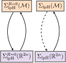
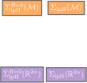
lpH-equivalence: We can derive full lpH systems from reduced lpH systems and vice-versa (in some cases). The solid arrows indicate that we have an explicit construction available, the dashed arrow indicates that in this specific case we do not yet know if a structure-preserving reduction is possible.
light: PDF · SVG · PNG 150 · 300 · 600


dark: PDF · SVG · PNG 150 · 300 · 600


offline-online
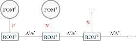
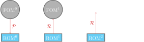
offline-online: The offline phase in reduced order modeling consists of finding the reduction and the reconstruction. In the online phase we solve the reduced model.
light: PDF · SVG · PNG 150 · 300 · 600


dark: PDF · SVG · PNG 150 · 300 · 600


reduced-order-modeling-idea
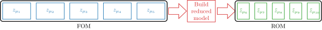
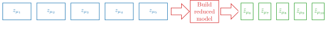
reduced-order-modeling-idea: Schematic representation of a reduced order modeling framework. The width of the individual blocks represent how long it takes to perform a simulation.
light: PDF · SVG · PNG 150 · 300 · 600


dark: PDF · SVG · PNG 150 · 300 · 600


sae-venn
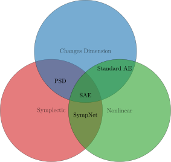
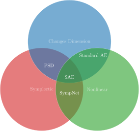
sae-venn: Venn diagram visualizing that a symplectic autoencoder (SAE) is symplectic, can change dimension and is nonlinear.
light: PDF · SVG · PNG 150 · 300 · 600


dark: PDF · SVG · PNG 150 · 300 · 600


solution-manifold-2


solution-manifold-2: A representation of a two-dimensional solution manifold embedded in three-dimensional Euclidean space.
light: PDF · SVG · PNG 150 · 300 · 600


dark: PDF · SVG · PNG 150 · 300 · 600


symplectic-autoencoder
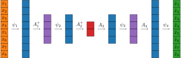
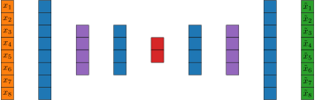
symplectic-autoencoder: A visualization of the symplectic autoencoder architecture. It is a composition of SympNet layers and PSD-like layers.
light: PDF · SVG · PNG 150 · 300 · 600


dark: PDF · SVG · PNG 150 · 300 · 600


symplectic-autoencoder-architecture
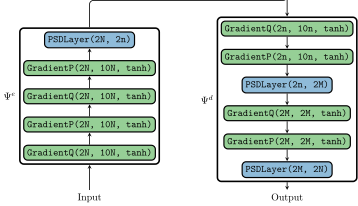
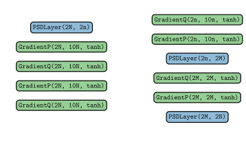
symplectic-autoencoder-architecture: Example of a symplectic autoencoder. The SympNet layers are in green, the PSD-like layers are in blue.
light: PDF · SVG · PNG 150 · 300 · 600


dark: PDF · SVG · PNG 150 · 300 · 600


sae-paper-autoencoder
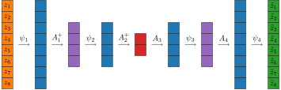
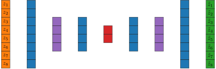
sae-paper-autoencoder: The symplectic autoencoder of the paper on symplectic autoencoders: SympNet layers alternate with PSD-like layers, which reduce the dimension in the encoder and increase it in the decoder.
light: PDF · SVG · PNG 150 · 300 · 600


dark: PDF · SVG · PNG 150 · 300 · 600


sae-paper-architecture
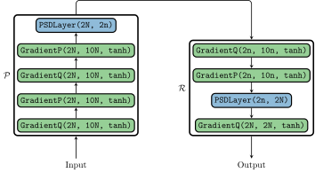
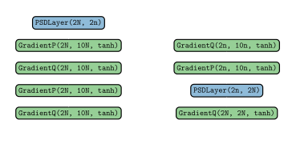
sae-paper-architecture: The architecture of the experiments of the paper on symplectic autoencoders in GeometricMachineLearning.jl syntax: SympNet layers in green, PSD-like layers in blue.